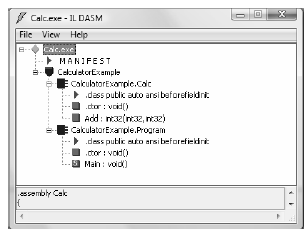
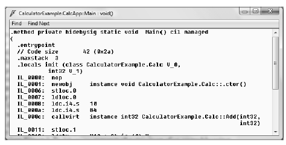
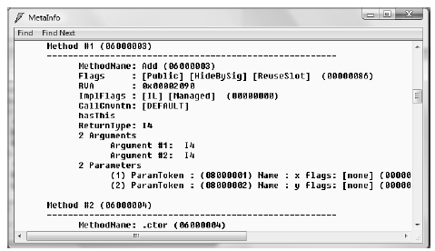
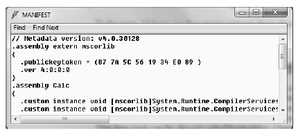

If you are beginning to feel a tad overwhelmed at the thought of gaining mastery over every namespace in the .NET platform, just remember that what makes a namespace unique is that it contains types that are somehow semantically related. Therefore, if you have no need for a user interface beyond a simple Console Application, you can forget all about the System.Windows.Forms, System.Windows, and System.Web namespaces (among others). If you are building a painting application, the database namespaces are most likely of little concern. Like any new set of prefabricated code, you learn as you go.
The Intermediate Language Disassembler utility (ildasm.exe), which ships with the .NET Framework 4.0 SDK, allows you to load up any .NET assembly and investigate its contents, including the associated manifest, CIL code, and type metadata. By default, ildasm.exe should be installed under C:\Program Files\Microsoft SDKs\Windows\v7.0A\bin (if you cannot find ildasm.exe in this location, simply search your machine for a file named ildasm.exe).
Note You can easily run ildasm.exe by opening a Visual Studio 2010 Command Prompt, and type “ildasm” (without the quotes) followed by the Enter key.
Once you run this tool, proceed to the File | Open menu command and navigate to an assembly you wish to explore. By way of illustration, here is the Calc.exe assembly generated based on the Calc.cs file shown earlier in this chapter (see Figure 1-7). ildasm.exe presents the structure of an assembly using a familiar tree-view format.
Figure 1-7 ildasm.exe allows you to see the CIL code, manifest, and metadata within a .NET assembly
In addition to showing the namespaces, types, and members contained in a given assembly, ildasm.exe also allows you to view the CIL instructions for a given member. For example, if you were to double-click the Main() method of the Program class, a separate window would display the underlying CIL (see Figure 1-8).
Figure 1-8 Viewing the underlying CIL
If you wish to view the type metadata for the currently loaded assembly, press Ctrl+M. Figure 1-9 shows the metadata for the Calc.Add() method.
Figure 1-9 Viewing type metadata via ildasm.exe
Finally, if you are interested in viewing the contents of the assembly’s manifest, simply double-click the MANIFEST icon (see Figure 1-10).
Figure 1-10 Viewing manifest data via ildasm.exe
To be sure, ildasm.exe has more options than shown here, and I will illustrate additional features of the tool where appropriate in the text.